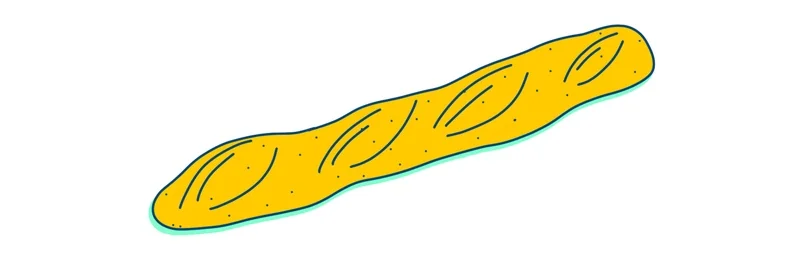

Данила Блюз задался одним из важнейших вопросов в истории человечества: почему женщины так падки на французов? Откуда это пошло? Ведь французы продули Ватерлоо, сдались фашистам и профукали Нотр-Дам! Как представители такой позорной нации могут очаровывать женщин?
Бабы — дуры. Это общеизвестный факт. И ведутся они вечно на всякую дурость: туфли на шпильке, цацки блестючие, единорогов, трусы кружевные, монпансье, микроскопических собачек и прочий хлам, среди которого есть француз. Тогда как всякий умный человек знает, что обувь должна быть удобной и ноской, единорогов не существует, есть надо только мясо и картошку, собака должна быть не для красоты и сюсюканья, а для охраны и охоты, а французы — самый пустой и никчемный народ на свете.
Вся их история — одно сплошное позорище, литература их — помпезный пошлый вздор, кинематограф либо глуп и вульгарен, либо нарочито заумен, что еще хуже. Говорят французы на каком-то курлыкающе-булькающе-квакающем языке, будто бы пытаются выхаркать из горла лягушку, а жрут какие-то помои вроде гнилых вонючих сыров, улиток, устриц, рыбьих голов, птичьих потрохов и прочей дряни.
При этом французы завзятые алкоголики — они целый день хлещут кислое вино. И начинают это делать с младенчества! Под конец дня рядовой француз уже красноморд, синенос и ни слова не может произнести даже на своем смешном языке. Единственное, что французы нормального сделали за всю историю, за что их еще кое-как уважал мир, — это Нотр-Дам де Пари, да и тот недавно просрали. Наверняка какой-нибудь пидор в берете на строительных лесах курил свой «Житан» вонючий, да бросил окурок не туда. Говорю же, бестолочи, а не нация!
Так отчего же наши бабы, завидев француза, тут же повышают влажность в помещении настолько, что окна запотевают? Почему разевают рот и идут, как покорные буренки, с лягушатником в спальню? Попробуем разобраться в этом нелегком вопросе.
Французы — дураки
Да, такие же пустоголовые существа, как и бабы, даром что у них усы имеются. При этом они дураки легковесные, озорные, а бабы это любят. Наш мужик что? У него печать скорби на лице, брови сгружены на лбу в кучу от тягостных дум, а как выпьет водки, так начнет выть заунывные песни про черного ворона или про мороз. Никакого шику. То ли дело француз! Дурак дураком, озорной, веселый, лопочет чего-то, усом шевелит, хихикает, а как выпьет, так сразу начнет петь про Париж и прочее диковинное шанзелизе. Они с бабами на одной волне, такие же воздушные и бестолковые. Оттого там, кстати, столько заднеприводных, но это уже другая тема.
Гипноз
Вы слышали французскую речь? Там же сплошные сю-сю-сю, пю-пю-пю, мур-мур-мур, тру-ля-ля. Известно, что от этих звуков женщины непроизвольно возбуждаются. Язык — штука тонкая, он формируется сотни тысяч лет, и французы, известные своей похотливостью еще с древних времен, долго оттачивали свой язык как оружие соблазнения. Веками они подбирали самые нелепые звуки, пробовали их на бабах и нужные слова заносили в свой орфографический словарь.
Попробуйте, скажите своей бабе по-французски какую-нибудь дежурную фразу, вроде: «В моем номере нет полотенца» (Дан ма шамбр ильньяпа де сэрвьет) или: «У меня от устриц был понос» (Жя йю ля диарэ дьюит) и увидите, как она обсквиртует вам все полы, обои и шторы.

Эйфелева башня
Укоренению мифа о том, что французы великие любовники, поспособствовала и их хваленая Эйфелева башня. Он торчит посреди Парижа бесстыже, нахально, как член эксгибициониста. У какой еще страны или нации главным ее архитектурным символом была бы башня? Только у французов, которым надо всему миру показать свою фаллоцентричность! Вот, дескать, полюбуйтесь, какой у нас тут… У всех нормальных народов клевые, сложные памятники архитектуры: Кремли, Пирамиды, Колизеи, Стоунхенджи, а тут дурацкая башня из железяк! Но свое дело она, однако, делает — сигнализирует миру о том, какие они, французы якобы ебаки. Ну а наши дурынды ведутся, наивно полагая, что раз у нации башня на 300 метров торчит, то и в штанах тоже будет что-то грандиозное.
Вино
Выше я уже упоминал о том, что французы все сплошь алкаши и хлещут винище с самого утра. Разумеется, наших баб они тоже опаивают своими игристыми винами, ссылаясь на то, что это, дескать, такая традиция у них. Русскому-то Ваньке она, понятное дело, откажет, потому что тот ей будет водяру голимую предлагать, от которой бабы моментально слепнут и падают без чувств. Другое дело с французом — винишка вкусненького можно и пригубить немного. Врачи ведь советуют для кровообращения, да и нельзя же захмелеть с одного бокальчика бургундского? Ну а где один, там и второй, и третий, и вот наша баба уже сама себе не хозяйка, а французу только того и надо — уже шерудит у нее под юбкой, точку Джи с клитором выискивает, гад.
Феминизм
А еще французы придумали феминизм, чтобы ловчее баб окучивать. Первым смекнул что к чему старый похабник Вольтер и начал задвигать вздор о нелегкой бабьей доле и о том, что у баб тоже есть какие-никакие мозги. Тогда это было настоящим переворотом и девки просто толпами валились к Вольтеру в постель за то, что он их наконец-то за людей признал. Другие французские умники, видя такой успех у слабого пола, начали Вольтеру поддакивать, а кто и еще дальше пошел — бросились давать женщинам избирательное право и разрешать обучаться в университетах. В те блистательные времена каждый профеминист был просто завален свежей пиздятинкой. И до сих пор французы славятся чуткостью к женской доле. Но опять же, к чему все привело? В результате бабы озверели, начали требовать себе больше прав, а мужикам, наоборот, как бывшим угнетателям, прав поменьше, вплоть до положения домашнего раба. Знал бы Вольтер, во что это все выльется, может, и не затевал бы всей этой аферы с равноправием. Очередное доказательство того, что лягушатники — глупый, недальновидный народ. Единственный нормальный француз был Михаил Боярский. И все.